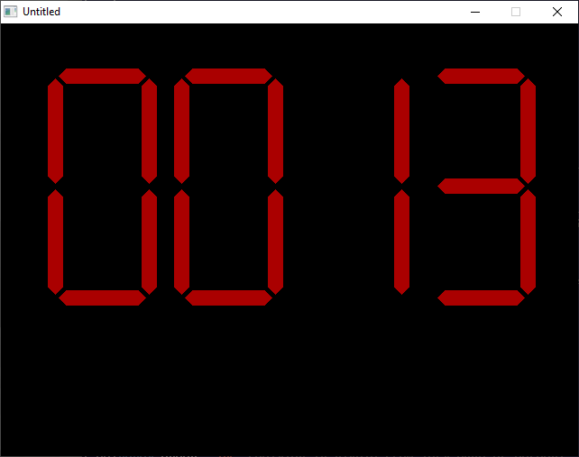

Home • News • GitHub • Wiki • Samples • InForm • GX • QBjs • Community • More…
SAMPLE: BIG LEDS

Author
Description
' BIG_LEDS.BAS
' by Scott Edwards
' Copyright (C) 1994 DOS World Magazine
' Published in Issue #19, January 1995, page 62
*****************************************************************************
BIG_LEDS.BAS
by Scott Edwards
Copyright (C) 1994 DOS World Magazine
Published in Issue #19, January 1995, page 62
If you've ever wanted your QBasic programs to display GIANT numbers on your
display, this program is for you. BIG_LEDS.BAS demonstrates the usage of two
subroutines, DISPLAY and LED, that display large numbers that look like the
LED display on a digital clock or wrist watch. The demo program displays a
four-digit value as it counts from zero to 9999, updating the display once
per second. You can stop the demo at any time by pressing any key.
To run the program from the DOS command line, change to the directory
containing BIG_LEDS.BAS, then type:
QBASIC /RUN BIG_LEDS
Like a real LED (light emitting diode) display, each numeral displayed by
this program consists of seven segments, each of which can be on or off. The
number 8, for example. uses all seven segments:
****
* *
* *
****
* *
* *
****
The DISPLAY subroutine extracts the digits of the number you want to display,
converts it to a bit pattern and feeds it to the LED subroutine. The LED
subroutine turns each segment on or off according to the pattern of bits
provided in the integer variable SEGS%.
The demo program's main loop consists of just five lines:
FOR X = 0 TO 9999
DISPLAY (X): SLEEP 1
IF INKEY$ <> "" THEN SYSTEM
NEXT X
END
This FOR...NEXT loop counts from 0 to 9999 and calls the DISPLAY subroutine
each time through the loop. If you press any key, the program exits back to
the QBasic environment.
You may customize the program by changing the values of the constants that
set the color, size, and screen position of the LED numerals. The constant
SCALE controls the spacing of the numerals. Only four values are useful:
1(small), 2(medium), 3(huge), and 4(jumbo). If you change SCALE, you must
also change the "Sn" value for constants A$ through G$. If you set SCALE to
1, for instance, the line that sets the value of A$ must be changed to:
CONST A$ = "S1 B M+0,-242 B R4 E8 R80 F8 G8 L80 H8 B R10"
In this example, S4 was changed to S1 because SCALE was changed from 4 to 1.
You may change the color of the numerals by altering the value of the
constant LIT. Values of 1 through 15 are permissible. To change the location
at which the numerals are displayed, substitute new values for the constants
XBASE and YBASE. Reducing XBASE moves the display to the left, increasing it
moves the display to the right. Reducing YBASE moves the display up,
increasing it moves the display down.
To use these routines in a program of your own, add the entire BIG_LEDS.BAS
listing to your program, except for the five lines shown above that comprise
the main program loop of the demo program. The easiest way to do this is to
Open BIG_LEDS.BAS in QBasic, Copy the relevant portions of the listing, Open
your program, and Paste the copied portion of BIG_LEDS.BAS into your program.
Now anytime you want to display a BIG number, insert the statement Display
(X) into your program, after first setting X equal to the number you wish to
display.
QBjs
Please note that QBjs is still in early development and support for these examples is extremely experimental (meaning will most likely not work). With that out of the way, give it a try!